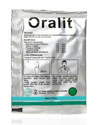
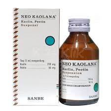
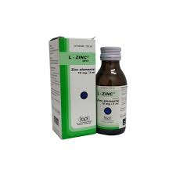

DIARE
Diare adalah buang air besar dengan konsistensi lembek atau cair, bahkan dapat berupa air saja dengan frekeunsi lebih sering dari biasanya (tiga kali atau lebih) dalam satu hari. Diare adalah perubahan konsistensi tinja yang terjadi tiba-tiba akibat kandungan air di dalam tinja melebihi normal (10ml/kg/hari) dengan peningkatan frekuensi defekasi lebih dari 3 kali dalam 24 jam dan berlangsung kurang dari 14 hari. Diare dibedakan menjadi diare akut, diare kronis dan persisiten. Diare akut adalah buang air besar pada bayi atau anak-anak melebihi 3 kali sehari, disertai dengan perubahan konsisitensi tinja menjadi cair dengan atau tanpa lender dan darah yang berlangsung kurang dari satu minggu, sedangkan diare kronis sering kali dianggap suatu kondisi yang sama namun dengan waktu yang lebih lama yaitu diare melebihi satu minggu, sebagian besar disebabkan diare akut berkepanjangan akibat infeksi, diare persisten adalah diare yang berlangsung 15-30 hari, merupakan diare berkelanjutan dari diare akut atau peralihan antara diare akut dan kronis biasanya ditandai dengan penurunan berat badan dan sukar untuk naik Kembali. Selain itu berdasarkan mekanisme patofisiologik dibedakan menjadi diare sekresi dan diare osmotic. Diare sekresi disebabkan karena meningkatnya sekresi air dan elekrtolit dari usus, menurunnya absorbs. Ciri khas pada diare ini adalah volume tinja yang banyak. Diare osmotic adalah diare yang disebabkan karena meningkatnya tekanan osmotik intralumen dari usus halus yang disebabkan oleh obatobat/zat kimia yang hiperosmotik seperti (magnesium sulfat, Magnesium Hidroksida), mal absorbs umum dan defek lama absorbi usus missal pada defisiensi disakarida, malabsorbsi glukosa/galaktosa.
- Gejala : Gejala diare dapat ditandai dengan Feses cair atau lembek dan keluar dalam jumlah banyak, mual muntah, munculnya darah pada feses, lemas dan pusing, kesulitan untuk menahan keinginan buang air besar, sakit perut atau bahkan kram, merasa haus terus menerus atau dehidrasi, dan demam
- Penyebab : Diare dapat disebabkan oleh beberapa factor diantaranya :
- - Factor infeksi : Proses ini dapat diawali adanya mikroorganisme (kuman) yang masuk ke dalam saluran pencernaan yang kemudian berkembang dalam usus dan merusak sel mukosa usus yang dapat menurunkan daerah permukaan usus. Selanjutnya terjadi perubahan kapasitas usus yang akhirnya mengakibatkan gangguan fungsi usus dalam absorpsi cairan dan elektrolit. Atau juga dikatakan adanya toksin bakteri akan menyebabkan transpor aktif dalam usus sehingga sel mukosa mengalami iritasi yang kemudian sekresi cairan dan elektrolit akan meningkat. Rotavirus dan Escherichia coli adalah dua agen etiologi paling umum dari penyebab diare sedang hingga berat. Patogen lainnya seperti spesies cryptosporidium dan shigella mungkin juga penyebab dari infeksi diare.
- - Factor malabsorpsi : Merupakan kegagalan dalam melakukan absorpsi yang mengakibatkan tekanan osmotik meningkat sehingga terjadi pergeseran air dan elektrolit ke rongga usus yang dapat meningkatkan isi rongga usus sehingga terjadilah diare.
- - Factor makanan : Faktor ini dapat terjadi apabila toksin yang ada tidak mampu diserap dengan baik. Sehingga terjadi peningkatan peristaltik usus yang mengakibatkan penurunan kesempatan untukmenyerap makan yang kemudian menyebabkan diare.
- - Factor psikologis : Faktor ini dapat mempengaruhi terjadinya peningkatan peristaltik usus yang akhirnya mempengaruhi proses penyerapan makanan yang dapat menyebabkan diare.
-
Pengobatan Konvensional
Oralit
- Kandungan : Natrium klorida 0.52 gram - Kalium klorida 0.3 gram - Trisodium sitrat dihidrat 0.58 gram - Glukosa anhidrat 2.7 gram.
- Dosis : Dibawah 1 tahun : 3 jam pertama 1.5 gelas, selanjutnya 1/2 gelas tiap kali mencret. Anak 1 - 5 tahun: 3 jam pertama 3 gelas, selanjutnya 1 gelas tiap kali mencret. Anak 5 - 12 tahun : 3 jam pertama 6 gelas, selanjutnya 1.5 gelas tiap kali mencret. Anak lebih dari 12 tahun : 3 jam pertama 12 gelas, selanjutnya 2 gelas tiap kali mencret.
- Indikasi : Obat ini digunakan untuk mencegah dan mengobati dehidrasi akibat diare dan muntah.
- Kontraindikasi : Penderita gangguan fungsi ginjal, malabsorpsi glukosa, serta dehidrasi parah.
- ESO : Perut kembung, nyeri perut, hipernatremia
Kaolin, pectin
- Adsorben dan emolien sehingga diyakini dapat mengikat racun/toksin dari bakteri yang ada di saluran pencernaan. Kaolin-pectin dapat memberikan efek sebagai antidiare.
- Kandungan : Per 15 mL mengandung: Kaolin 700 mg, Pectin 66 mg
- Dosis : Dewasa dan Anak > 12 tahun : 30 ml, maksimum 180 ml per hari. Anak 6-12 tahun : 15 ml, maksimum 90 ml per hari. Pemberian setiap kali sesudah buang air besar.
- Indikasi : Pengobatan simtomatik pada diare non spesifik.
- Kontraindikasi : Jangan diberikan pada penderita dimana konstipasi harus dihindari, penderita obstruksi usus, hipersensitif terhadap salah satu komponen dalam obat.
- ESO : Konstipasi sementara.
Zinc
- Sebagai pelengkap cairan rehidrasi oral (CRO) utk mengganti cairan tubuh dan mencegah dehidrasi pd anak, & digunakan bersama dg cairan rehidrasi oral.
- Kandungan : Tiap sendok teh (5ml) mengandung Zn sulphate monohydrate setara dengan zinc elemental 10mg.
- Dosis : Bayi usia 2-6 bulan : 1 sendok takar 5 ml, 1 kali sehari selama 10 hari (walaupun diare sudah berhenti). Anak usia 6 bulan-5 tahun : 2 sendok takar 5 ml (10 ml), 1 kali sehari selama 10 hari berturut-turut, bahkan jika diare sudah berhenti. Selama diare masih berlangsung, selain diberikan suplementasi zinc juga diberikan garam rehidrasi oral. Para ibu menyusui dianjurkan untuk tetap menyusui atau meningkatkan frekuensi menyusui pada anak selama dan setelah diare.
- Indikasi : Terapi pelengkap diare pada anak-anak. Digunakan bersama garam rehidrasi oral (oralit).
- Kontraindikasi : Belum dilaporkan adanya kontraindikasi untuk penggunaan obat ini
- ESO : Rasa pahit, mual, muntah dan iritasi pada mulut.
-
Pengobatan Herbal

Jambu biji dan Daunnya
- Berdasarkan beberapa penelitian menunjukkan bahwa penggunaan tanaman jambu biji dengan menggunakan daunnya yang mengandung tannin berfungsi sebagai adstringensia (pengelat) karena dapat menciutkan selaput lender usus yang dapat meredakan diare.
- Daun jambu biji dapat diolah menjadi teh dengan cara siapkan 3 – 6 lembar daun jambu biji yang telah dicuci bersih. Lalu rendam daun dalam air panas selama sekitar 10 menit. Teh daun jambu biji dapat dikonsumsi hingga 3 kali sehari.